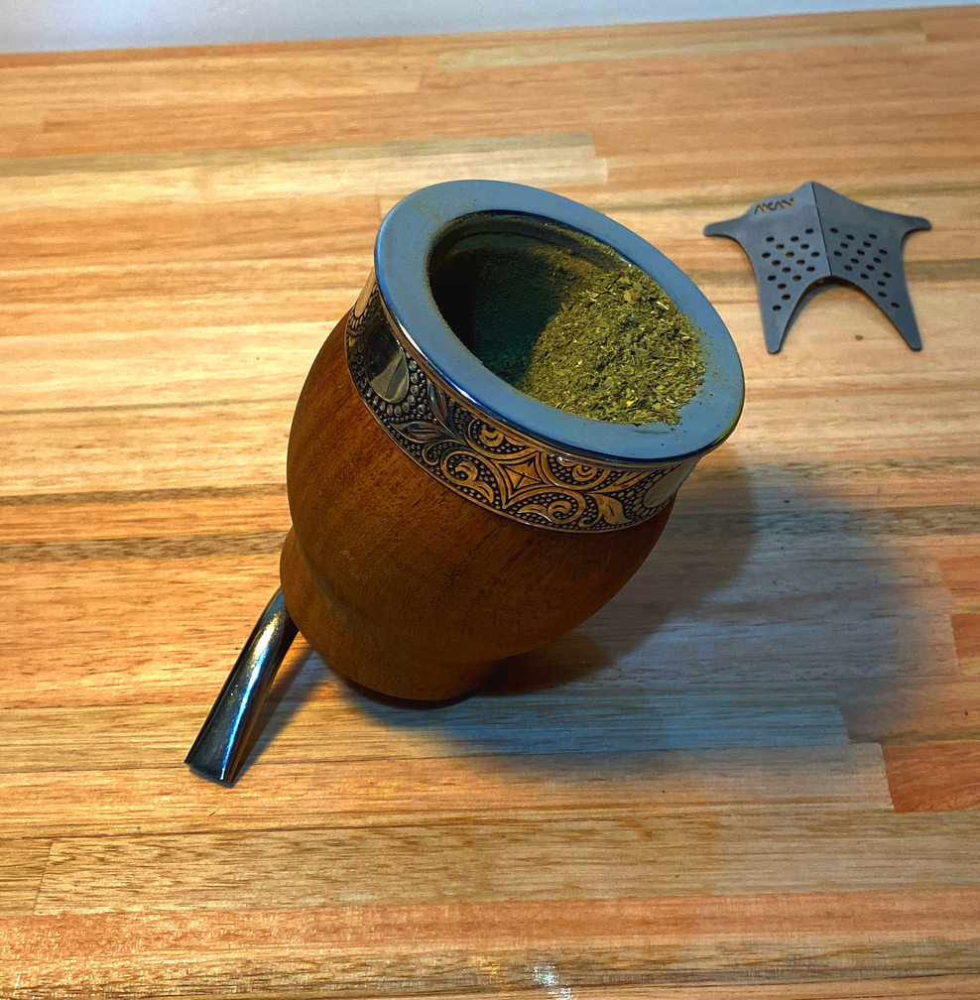
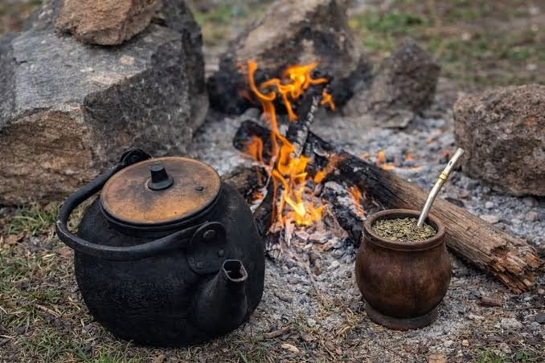
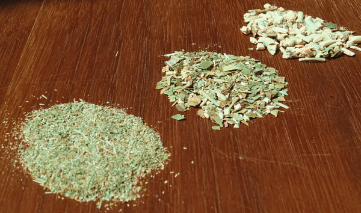
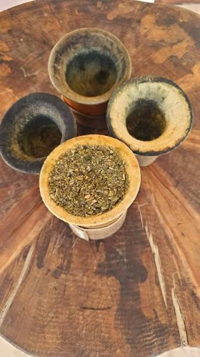
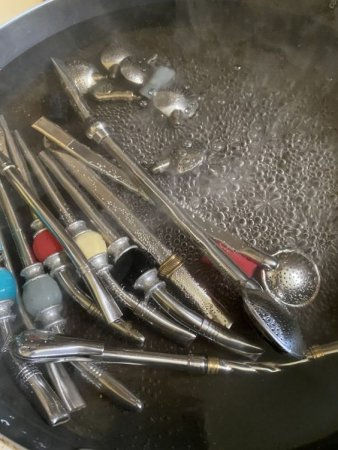
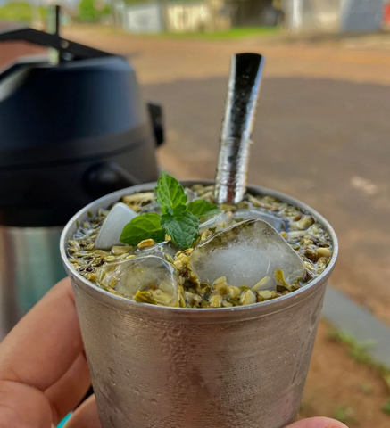

TUTORIALES
Preparar un buen mate es un ritual. Nostros te enseñamos a hacerlo de la mejor manera, para que lo disfrutes a pleno. Descubrí nuestra técnica, consejos y secretos para que tu experiencia sea única
La temperatura del agua, el tipo de yerba, el recipiente o la forma de cebar son algunos de los factores que influyen en el sabor y la calidad del mate. Estas guias son un punto de partida para encontrar tu manera favorita de prepararlo.
Pequeños consejos
Evitá el agua hirviendo y cebá de manera gradual para conservar el sabor de la yerba y no se te lave.

PREPARAR EL MATE
Preparar el mate
Llená el mate hasta tres cuartas partes con yerba. Inclinalo para formar una montañita, humedecé la parte baja y colocá la bombilla.

TEMPERATURA DEL AGUA
Temperatura del agua
La temperatura ideal para preparar mate está entre 70 y 80 °C. Evitá utilizar agua hirviendo, ya que puede alterar el sabor de la yerba.

ELEGIR LA YERBA
Elegir la yerba
La yerba con palo ofrece un sabor generalmente más suave, mientras que la yerba despalada proporciona un sabor más intenso. Elegí la que mejor se adapte a tus gustos.

CURAR EL MATE
Curar el mate
Los mates de calabaza suelen necesitar un curado antes de utilizarse. Colocá yerba húmeda en su interior, dejala reposar y luego retirala cuidadosamente.

LIMPIAR LA BOMBILLA
Limpiar la bombilla
Enjuagá la bombilla después de cada uso. Para una limpieza profunda, utilizá agua caliente y un cepillo especial para eliminar los residuos acumulados.

PREPARAR TERERÉ
Preparar tereré
Colocá yerba en un recipiente, agregá la bombilla y cebá con agua bien fría. Podés incorporar hielo, menta o cítricos para darle un toque refrescante.